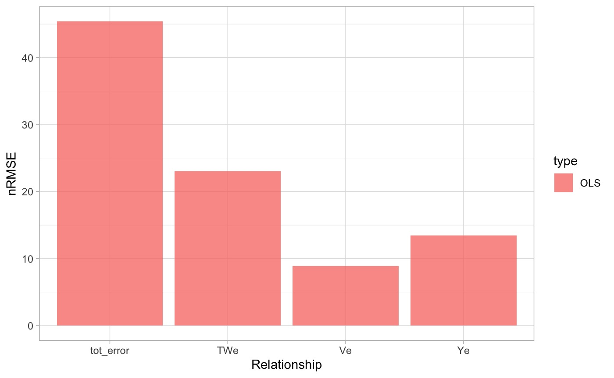
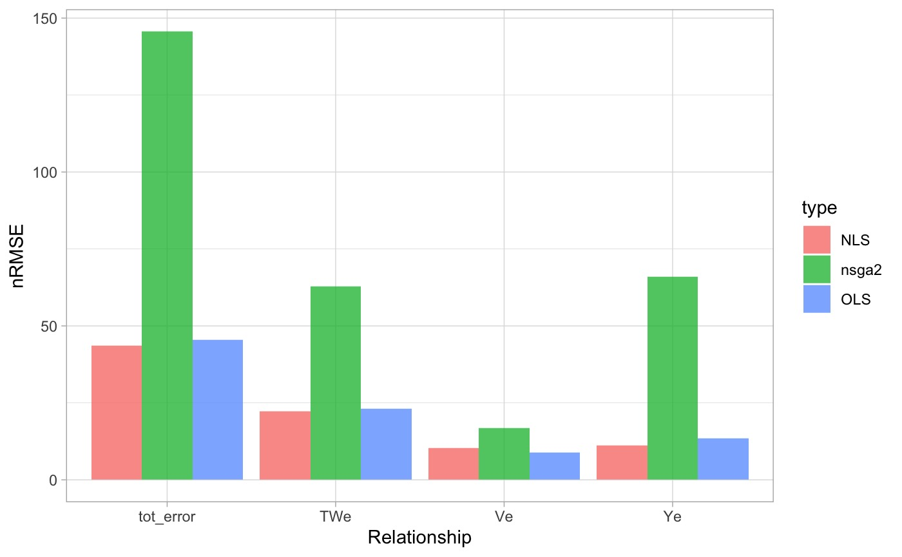

Improving AHG Estimates
Mike Johnson
Lynker, NOAA-AffilateSource:
vignettes/improved-ahg.Rmd
improved-ahg.Rmd
library(FHGestimation)
data = nwisIncreasing AHG skill:
In the last section we saw the traditional OLS based fit on our sample data provided a solution that met continuity, but, has a large amount of error. In this section we will explore alternative methods to see
Curve Fitting Approaches
When fitting a nonlinear curve to a set of data, the options are: (1) linearize the relationship by transforming the data; (2) fit a polynomial spline to the data; or (3) fit a nonlinear function. With our emphasis on interoperable power law relations, only the linear (1) and nonlinear (3) approaches are appropriate.
Nonlinear Least Square (NLS) regression provides more flexible curve fitting through an iterative optimization. NLS approaches require a specified starting value for each unknown parameter to ensure the solver converges on a global rather than a local minimum. When suboptimal starting values are provided, NLS solvers may converge on a local minimum, or, not at all.
OLS
ols = function(X, Y, name = NA){
fit = lm(log(Y) ~ log(X))
data.frame(coef = exp(fit$coefficients[1]),
exp = fit$coefficients[2],
name = name,
row.names = NULL)
}
(ols_fit = bind_rows(
ols(data$Q, data$Y, "Y"),
ols(data$Q, data$TW, "TW"),
ols(data$Q, data$V, "V"))%>%
mutate(method = "ols"))
#> coef exp name method
#> 1 0.2004177 0.4797009 Y ols
#> 2 23.0100349 0.1104173 TW ols
#> 3 0.2155711 0.4093273 V ols
sum(ols_fit$exp)
#> [1] 0.9994455
prod(ols_fit$coef)
#> [1] 0.9941314
olsP = data %>%
mutate(Yp = ols_fit$coef[1] * (Q ^ ols_fit$exp[1]),
TWp = ols_fit$coef[2] * (Q ^ ols_fit$exp[2]),
Vp = ols_fit$coef[3] * (Q ^ ols_fit$exp[3]))
ols_e = data.frame(
Ye = nrmse(olsP$Y, olsP$Yp),
TWe = nrmse(olsP$TW, olsP$TWp),
Ve = nrmse(olsP$V, olsP$Vp)) %>%
mutate(tot_error = Ye + TWe + Ve, type = "OLS") #> Warning in geom_col(data = tidyr::pivot_longer(ols_e, -type), aes(x = name, :
#> Ignoring unknown parameters: `stat`
NLS
nls = function(X, Y, coef, exp, name = NA){
s <- summary(suppressWarnings({
stats::nls(Y ~ alpha * X ^ x,
start = list(alpha = coef, x = exp),
trace = FALSE,
control = nls.control(maxiter = 50, tol=1e-09, warnOnly=TRUE))
}))
data.frame(coef = s$coefficients[1,1],
exp = s$coefficients[2,1],
name = name,
row.names = NULL)
}
(nls_fit = bind_rows(
nls(X = data$Q, Y = data$Y, coef = ols_fit$coef[1], exp = ols_fit$exp[1], "Y"),
nls(X = data$Q, Y = data$TW, coef = ols_fit$coef[2], exp = ols_fit$exp[2], "TW"),
nls(X = data$Q, Y = data$V, coef = ols_fit$coef[3], exp = ols_fit$exp[3], "V")) %>%
mutate(method = "nls"))
#> coef exp name method
#> 1 0.1871979 0.5185496 Y nls
#> 2 23.3057155 0.1111103 TW nls
#> 3 0.2886315 0.3273010 V nls
sum(nls_fit$exp)
#> [1] 0.956961
prod(nls_fit$coef)
#> [1] 1.259236
nlsP = data %>%
mutate(Yp = nls_fit$coef[1] * (Q ^ nls_fit$exp[1]),
TWp = nls_fit$coef[2] * (Q ^ nls_fit$exp[2]),
Vp = nls_fit$coef[3] * (Q ^ nls_fit$exp[3]),
method = "nls")
nls_e = data.frame(
Ye = nrmse(nlsP$Y, nlsP$Yp),
TWe = nrmse(nlsP$TW, nlsP$TWp),
Ve = nrmse(nlsP$V, nlsP$Vp)
) %>%
mutate(tot_error = Ye + TWe + Ve, type = "NLS") #> Warning in geom_col(data = tidyr::pivot_longer(e, -type), aes(x = name, :
#> Ignoring unknown parameters: `stat`NSGA-II
allowance = 0.05
# x assumed to be ordered as: k, m, a, b, c, f
objective_function <- function(x) {
v = nrmse(x[1]*data$Q^x[2], data$V)
t = nrmse(x[3]*data$Q^x[4], data$TW)
d = nrmse(x[5]*data$Q^x[6], data$Y)
return(c(v,t,d))
}
constraint = function(x) {
return(c((1 + allowance) - (x[1] * x[3] * x[5]),
(x[1] * x[3] * x[5]) - (1 - allowance),
(1 + allowance) - (x[2] + x[4] + x[6]),
(x[2] + x[4] + x[6]) - (1 - allowance)))
}
set.seed(10291991)
res = nsga2(
objective_function,
constraints = constraint,
# 6 inputs, 3 outputs, 4 constraints
idim = 6, odim = 3, cdim = 4,
# Bounds determined from literature
lower.bounds = c(0, 0, 0, 0, 0, 0),
upper.bounds = c(3.5, 1, 642, 1, 20, 1),
# Defaults we've chosen
generations = 200,
popsize = 32,
cprob = .5,
mprob = .1)
vals = res$value[res$pareto.optimal, ]
vals = vals[!duplicated(vals), ]
par = res$par[res$pareto.optimal, ]
par = par[!duplicated(par), ]
ahg = par[which.min(rowSums(vals)),]
nsga_fit = data.frame(coef = ahg[c(1,3,5)], exp = ahg[c(2,4,6)], name = c("V", "TW", "Y"), method = "nsga2")
nsgs_e = data.frame(
Ve = nrmse((ahg[1] * data$Q ^ ahg[2]), data$V) ,
TWe = nrmse((ahg[3] * data$Q ^ ahg[4]), data$TW),
Ye = nrmse((ahg[5] * data$Q ^ ahg[6]), data$Y),
type = "nsga2") %>%
mutate(tot_error = Ve + TWe + Ye)#> Warning in geom_col(data = tidyr::pivot_longer(e, -type), aes(x = name, :
#> Ignoring unknown parameters: `stat`
Combination Approach
d = bind_rows(ols_fit, nls_fit, nsga_fit)
r = split(d, f = d$name)
fit = function(g, ind, V, TW, Y, Q, allowance = .05) {
x = g[ind,]
g$V_error[ind] = nrmse(x$V_coef*(Q^x$V_exp), V)
g$TW_error[ind] = nrmse(x$TW_coef*(Q^x$TW_exp), TW)
g$Y_error[ind] = nrmse(x$Y_coef*(Q^x$Y_exp), Y)
c1 = round(g$V_coef[ind] * g$Y_coef[ind] * g$TW_coef[ind], 3)
c2 = round(g$V_exp[ind] + g$Y_exp[ind] + g$TW_exp[ind], 3)
g$viable[ind] = (between(c1, 1-allowance, 1+allowance) + between(c2, 1-allowance, 1+allowance)) == 2
g
}
names = c("V", "TW", "Y")
g = rep(list(c("ols", "nls", "nsga2")), 3) %>%
expand.grid() %>%
setNames(paste0(names, "_method")) %>%
mutate(viable = NA, tot_error = NA) %>%
bind_cols(setNames(data.frame(matrix(NA, ncol = 9, nrow =27)),
c(paste0(names, "_error"), paste0(names, "_coef"), paste0(names, "_exp"))))
for(t in 1:3){
x = g[[paste0(names[t], "_method")]]
ind = match(x, r[[names[t]]]$method)
g[[paste0(names[t], '_exp')]] = r[[names[t]]]$exp[ind]
g[[paste0(names[t], '_coef')]] = r[[names[t]]]$coef[ind]
}
for(i in 1:nrow(g)){ g = fit(g, i, data$V, data$TW, data$Y, data$Q)}
g$tot_error = rowSums(g[, grepl("error", names(g))], na.rm = TRUE)
combo = filter(g, viable == TRUE) %>%
slice_min(tot_error) %>%
mutate(condition = "bestValid")
ols = filter(g, Y_method == "ols", TW_method == "ols", V_method == "ols") %>%
mutate(condition = "ols")
nls = filter(g, Y_method == "nls", TW_method == "nls", V_method == "nls") %>%
mutate(condition = "nls")
nsga = filter(g, Y_method == "nsga2", TW_method == "nsga2", V_method == "nsga2") %>%
mutate(condition = "nsga2")
summary = bind_rows(combo, ols, nls, nsga) %>%
arrange(!viable, tot_error)#> Warning: There was 1 warning in `mutate()`.
#> ℹ In argument: `across(where(is.numeric), round, digits = 2)`.
#> Caused by warning:
#> ! The `...` argument of `across()` is deprecated as of dplyr 1.1.0.
#> Supply arguments directly to `.fns` through an anonymous function instead.
#>
#> # Previously
#> across(a:b, mean, na.rm = TRUE)
#>
#> # Now
#> across(a:b, \(x) mean(x, na.rm = TRUE))| V_method | TW_method | Y_method | viable | tot_error | V_error | TW_error | Y_error | V_coef | TW_coef | Y_coef | V_exp | TW_exp | Y_exp | condition |
|---|---|---|---|---|---|---|---|---|---|---|---|---|---|---|
| ols | nls | ols | TRUE | 33.25 | 11.35 | 13.32 | 8.58 | 0.22 | 23.31 | 0.20 | 0.41 | 0.11 | 0.48 | bestValid |
| ols | ols | ols | TRUE | 33.30 | 11.35 | 13.37 | 8.58 | 0.22 | 23.01 | 0.20 | 0.41 | 0.11 | 0.48 | ols |
| nsga2 | nsga2 | nsga2 | TRUE | 177.29 | 11.48 | 65.93 | 99.88 | 0.39 | 0.41 | 5.87 | 0.24 | 0.80 | 0.00 | nsga2 |
| nls | nls | nls | FALSE | 32.03 | 10.36 | 13.32 | 8.35 | 0.29 | 23.31 | 0.19 | 0.33 | 0.11 | 0.52 | nls |
Packaged Functionality
The above workflow follows this diagram:

And can be executed like this:
fhg = fhg_estimate(data)NOTE Single relationships can also be fit like this:
fhg_estimate(select(data, Q, Y))
#> type exp coef nrmse pb method
#> 1 Y 0.5185496 0.1871979 8.35 -0.18 nls
#> 2 Y 0.4797009 0.2004177 8.58 -6.19 ols